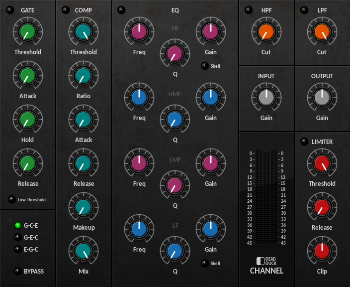
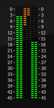
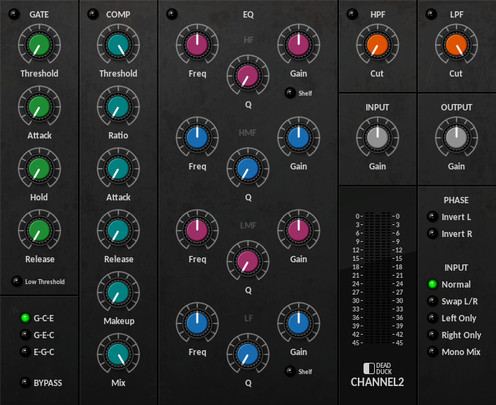

Channel Strips¶
Channel¶
A multi-function channel-strip plugin featuring gate, compressor, equaliser, limiter, filters and gain controls with comprehensive input, output and gain-reduction metering.
The Gate, Comp, EQ and Limiter modules are taken directly from the corresponding stand-alone plugins and function the same way. See the appropriate sections in this user guide for more information.
The remaining controls behave as follows:
HPF - set the highpass filter cutoff frequency from 10 Hz to 1500 Hz.
LPF - set the lowpass filter cutoff frequency from 1500 Hz to 15 kHz.
Input/Output - set the input and output gain levels from -20 dB to +20 dB.
The signal flow is as follows:
Input gain
Input metering
Highpass filter
Lowpass filter
Gate/Compressor/EQ
Output gain
Limiter
Clipper
Output metering
The order in which the signal is passed through the Gate/Compressor/EQ chain is determined by the selector in the lower left corner:
G-C-E - Gate/Comp/EQ.
G-E-C - Gate/EQ/Comp.
E-G-C - EQ/Gate/Comp.
The Channel meter includes displays for stereo input, gain reduction, limiting and stereo output:
Channel2¶
A zero-latency version of the Channel plugin minus the limiter.
The Limiter module included in the Channel plugin uses a look-ahead buffer to manage the incoming signal and thus introduces a fixed latency of 1.5 ms into the plugin’s signal flow. This latency remains even when the limiter is bypassed. To cater for latency-free processing, a second channel-strip plugin ‘Channel2’ is available.
Channel2 omits the limiter module and its associated latency replacing it with a utility section taken from the plugin of the same name.
The signal flow for Channel2 is as follows:
Input gain
Input metering
L/R phase invert
Input switching
Highpass filter
Lowpass filter
Gate/Compressor/EQ
Output gain
Output metering
See the Channel and Utility sections in this guide for more information.